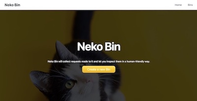

Neko Bin
A RequestBin.com clone - An application for inspecting and receiving webhook requests.
Built with Node.js, MongoDB, PostgreSQL, and Express.
Full stack Software Engineer based in Tokyo & Nagano
I'm a software engineer that previously worked as a Project Manager at a Digital Design Agency in Tokyo.
After years managing client projects, I decided to follow my passion and pursue software engineering.
I recently co-created Conifer, an open source test parallelisation app for Cypress.
Conifer is an open-source framework for parallelizing Cypress tests on AWS infrastructure. Conifer automates the provisioning of a parallelized testing infrastructure and the deployment of the user's application onto this infrastructure. The user can then execute their test suite across the multiple nodes of the parallelized infrastructure to dramatically reduce the amount of time it takes to test their application.
A RequestBin.com clone - An application for inspecting and receiving webhook requests.
Built with Node.js, MongoDB, PostgreSQL, and Express.
Trello clone - A kanban board application for project management.
Built with React/Redux for the frontend and express/MongoDB for the backend.